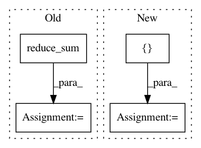

d41aa4d2c995796e3978a83052515572f402fa5f,basic/model.py,Model,_build_loss,#Model#,219
Before Change
if config.wy:
losses = tf.nn.sigmoid_cross_entropy_with_logits(
tf.reshape(self.logits2, [-1, M, JX]), tf.cast(self.wy, "float")) // [N, M, JX]
num_pos = tf.reduce_sum(tf.cast(self.wy, "float"))
num_neg = tf.reduce_sum(tf.cast(self.x_mask, "float")) - num_pos
damp_ratio = num_pos / num_neg
dampened_losses = losses * ((tf.cast(self.x_mask, "float") - tf.cast(self.wy, "float")) * damp_ratio + tf.cast(self.wy, "float"))
new_losses = tf.reduce_sum(dampened_losses, [1, 2])
ce_loss = tf.reduce_mean(loss_mask * new_losses)
tf.add_to_collection("losses", ce_loss)
else:
After Change
if config.wy:
if config.na:
na = tf.reshape(self.na, [-1, 1])
concat_y = tf.concat(1, [na, tf.reshape(self.wy, [-1, M * JX])])
losses = tf.nn.softmax_cross_entropy_with_logits(self.concat_logits, tf.cast(concat_y, "float"))
else:
losses = tf.nn.softmax_cross_entropy_with_logits(
self.logits2, tf.cast(tf.reshape(self.wy, [-1, M * JX]), "float"))
In pattern: SUPERPATTERN
Frequency: 3
Non-data size: 4
Instances
Project Name: wenwei202/iss-rnns
Commit Name: d41aa4d2c995796e3978a83052515572f402fa5f
Time: 2017-01-21
Author: seominjoon@gmail.com
File Name: basic/model.py
Class Name: Model
Method Name: _build_loss
Project Name: rail-berkeley/softlearning
Commit Name: 6aa2cf60e7b62c83548a27c80a1f34e38160e0e1
Time: 2018-10-28
Author: hartikainen@berkeley.edu
File Name: softlearning/algorithms/sac.py
Class Name: SAC
Method Name: _init_actor_update
Project Name: GPflow/GPflow
Commit Name: bd1e9c04b48dd5ccca9619d5eaa2595a358bdb08
Time: 2020-01-31
Author: st--@users.noreply.github.com
File Name: gpflow/kernels/misc.py
Class Name: Coregion
Method Name: K_diag